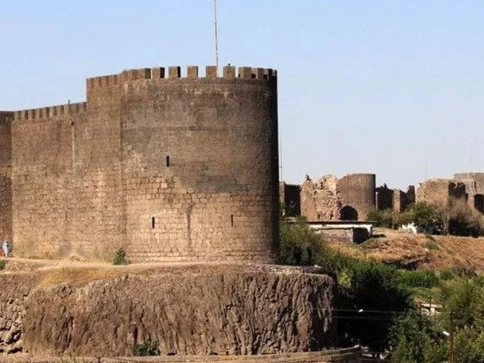
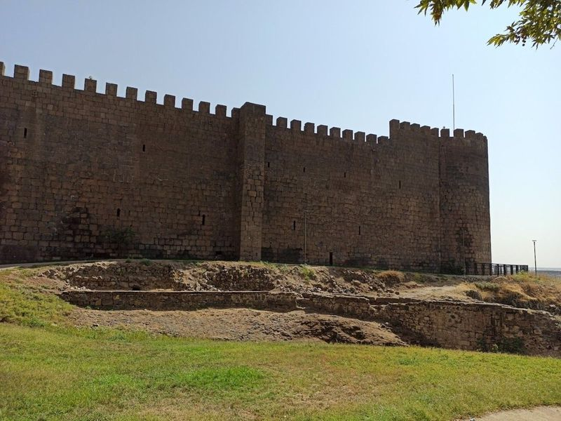
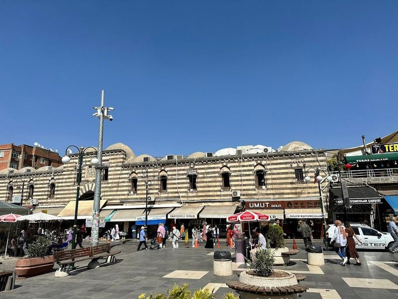
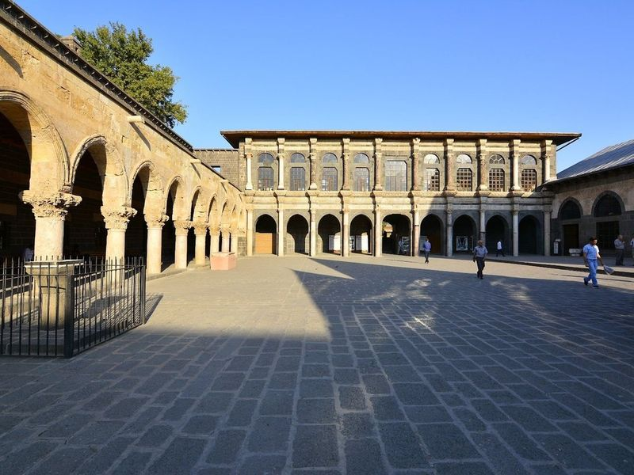
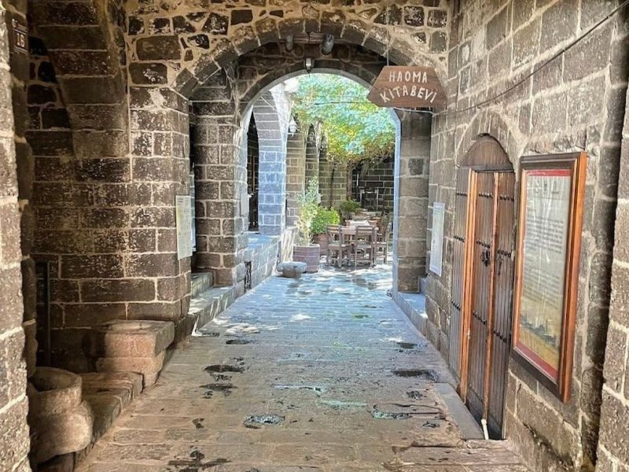
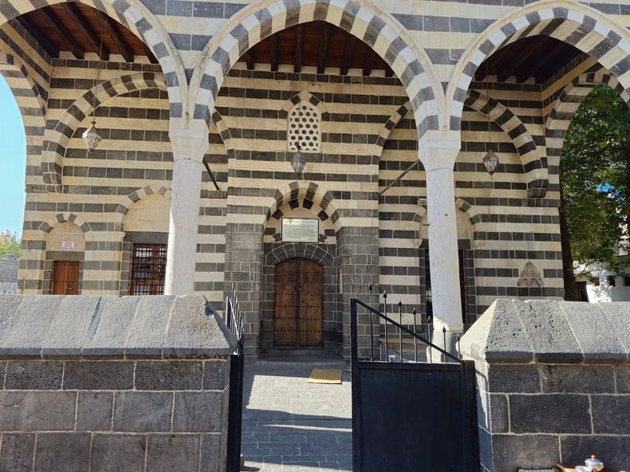
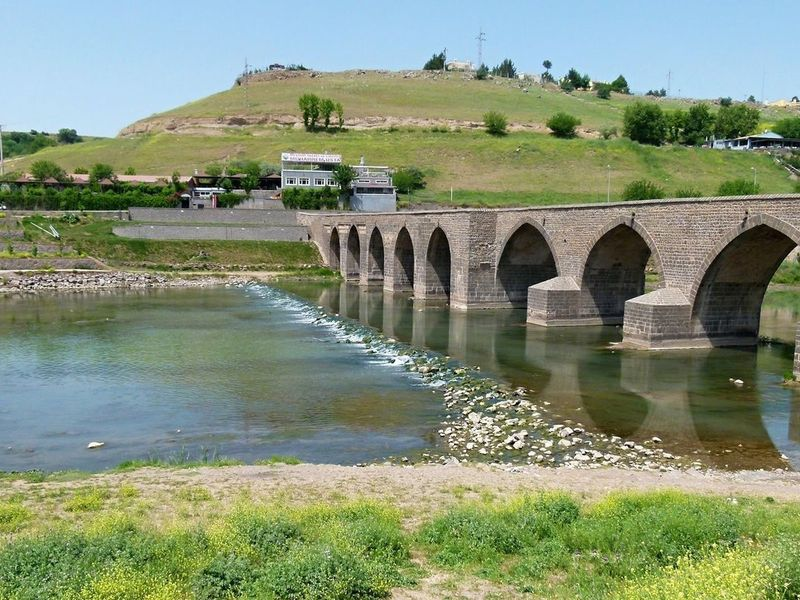
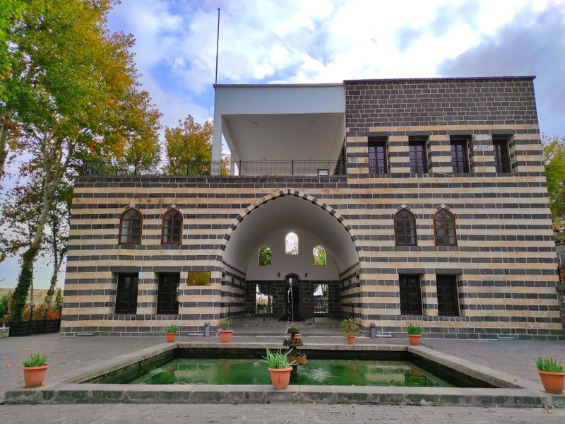
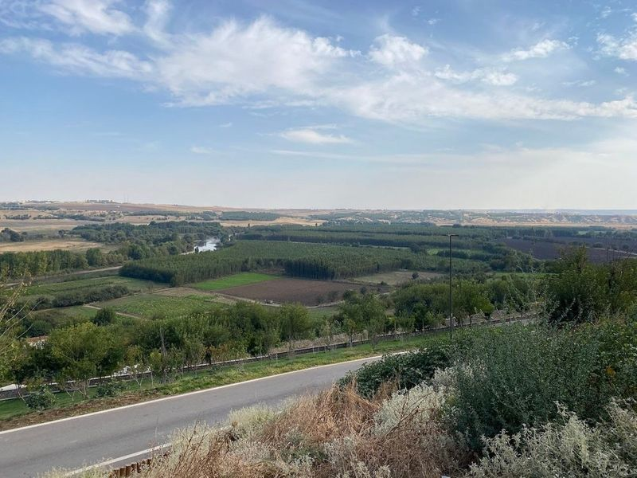
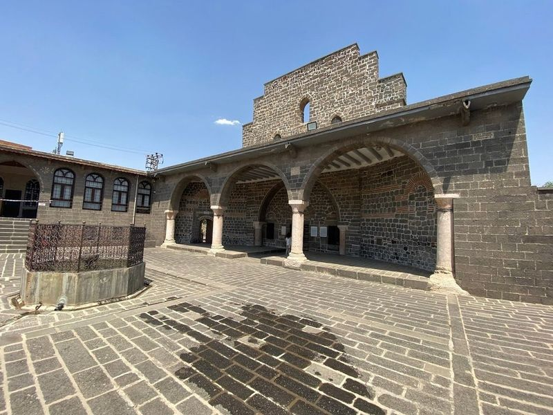

Explore Diyarbakır
A Brief History
Diyarbakır commands the upper Tigris where Amida's black basalt walls, largely Roman with later repairs, enclose one of Mesopotamia's oldest continuously inhabited cities. Armenian, Syriac, Kurdish, and Turkish communities built churches, mosques, and caravanserais along streets that linked Anatolia to the Jazira. The Hevsel Gardens and citadel record centuries of frontier rule under Arab, Seljuk, and Ottoman empires before the city became a cultural centre of southeastern Turkey.
Attractions Map
Top Sights & Activities

Diyarbakir Castle
Diyarbakir Castle, a remarkable fortress built by the Romans in 297 CE, stands as a testament to the city's rich history and architectural prowess. in southeastern Turkey along the banks of the Tigris River, Diyarbakir is often referred to as an open-air museum due to its blend of ancient heritage and contemporary life. The castle itself stretches an impressive 5,700 meters long and rises 12 meters high, featuring a unique design reminiscent of a turbot fish.

Diyarbakır Walls
in southeastern Turkey, the Diyarbakır Walls stand as a monumental testament to history and resilience. These impressive fortifications are among the longest defensive walls globally, second only to the Great Wall of China. Dating back to Roman times and later expanded during Ottoman rule, they soar up to 53 meters high and feature striking black-and-white stone patterns that not only serve an aesthetic purpose but also symbolize the region's rich cultural tapestry.

Hasan Pasha Inn
in the heart of Diyarbakir, the Hasan Pasha Inn is a 16th-century structure that beautifully showcases traditional Ottoman architecture. Built between 1572 and 1575, this two-story courtyard inn features impressive domed fountains and striking columns, making it one of the city's architectural gems. Located near the Grand Mosque, it's not just a historical site but also a hub for travellers seeking breakfast or a cozy coffee break after exploring the area.

Diyarbakır Grand Mosque
The Diyarbakır Grand Mosque, also known as Ulu Camii, is a significant Muslim religious complex with a rich history dating back to 1091. Situated in a city steeped in nine thousand years of diverse civilizations and cultures, the mosque boasts picturesque architecture and a large courtyard. Originally a church, it was converted into a mosque and is believed to have ties to Prophet Musa AS.

Sülüklü Han
Sülüklü Han, In Diyarbakir in Turkey's southeastern Anatolia region, is a historic site that has been transformed into a cafe and terrace. The well in its courtyard was once home to leeches believed to have healing properties. Originally a three-story building with various uses, it now houses a cozy cafe where travellers can enjoy delicious local wine and cheese.

Dört Ayaklı Minare
Sheikh Matar Mosque, also known as Sheikh Mutahhar Mosque, is a historical landmark located in Diyarbakir, Turkey. Commissioned by Hajji Huseyin during the Aq Qoyunlu period and completed in 1500, it features a distinctive single dome and a unique minaret supported by four columns, earning it the nickname 'Four-legged Minaret.'.

Ongözlü Bridge
in the heart of Diyarbakir, the Ongözlü Bridge, also known as the Dicle Bridge or Silvan Bridge, is a 11th-century stone structure that boasts ten majestic arches. Built during the Marwanid period under Nizamuddin Nasr between 1065 and 1067, this remarkable bridge spans 18 meters in length and approximately six meters in width. Crafted from durable volcanic basalt and rubble stone, it stands as a testament to ancient engineering.

Gazi Köşkü Şark Evi
In Diyarbakir, make sure to include Gazi Köşkü Şark Evi in travel plans. This two-storey mansion stands out with its expansive grounds adorned with lush greenery, used for leisurely strolls amidst nature. The venue has been transformed into a cultural center and café, where enjoy live music and performances that capture the essence of local nightlife. After a day of sightseeing, it’s an public space to relax and connect with the friendly locals.

Hevsel Gardens
Hevsel Gardens, also known as Hevsel Bahceleri, is a historic landmark located between the Diyarbakir City Walls and the Tigris River. This UNESCO World Cultural Heritage site spans approximately 4,000 decares and boasts fertile alluvial soils ideal for growing various fruits, vegetables, and popular trees.

Syriac Orthodox Church of the Virgin Mary
Tucked away in the city of Diyarbakir, located in southeastern Anatolia, lies the enchanting Syriac Orthodox Church of the Virgin Mary. This historical gem is believed to date back to either the 3rd or possibly even the 4th century, making it a significant site for those interested in ancient architecture and religious history.